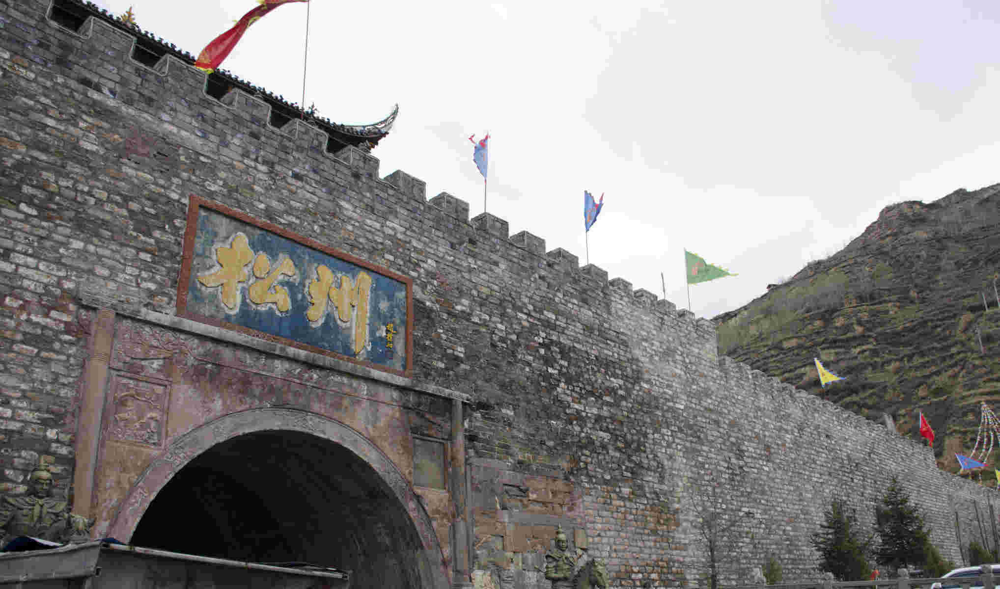
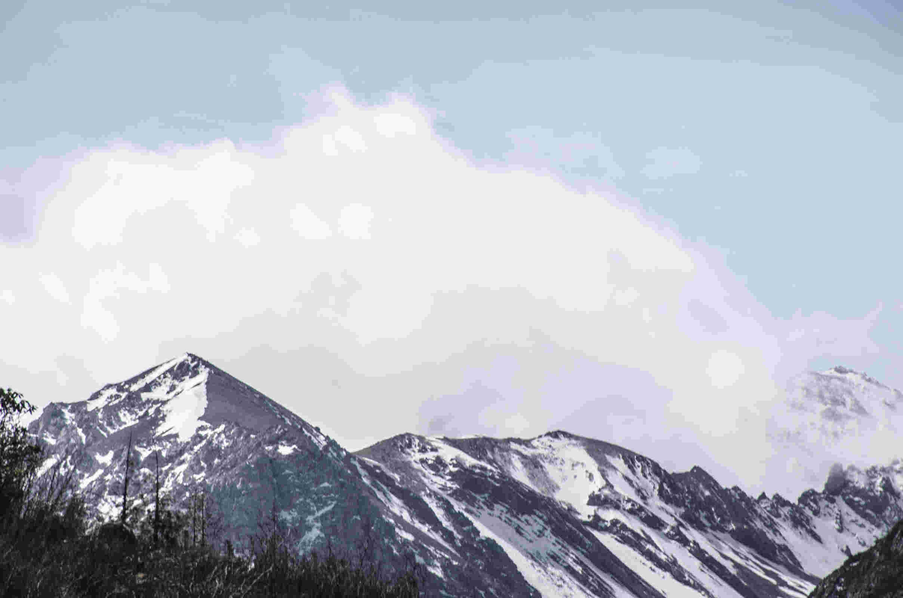
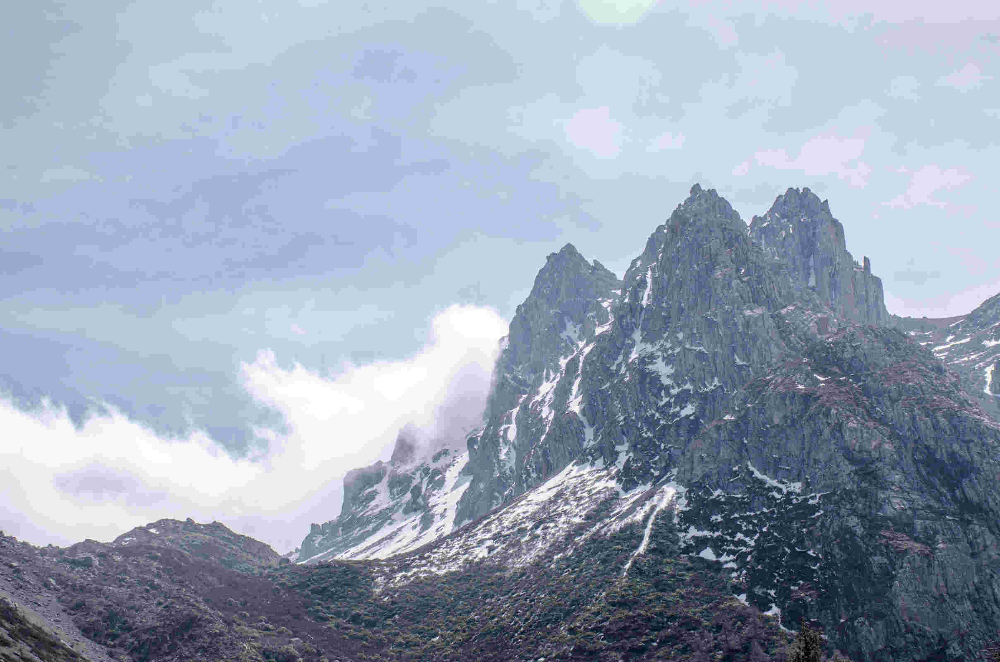
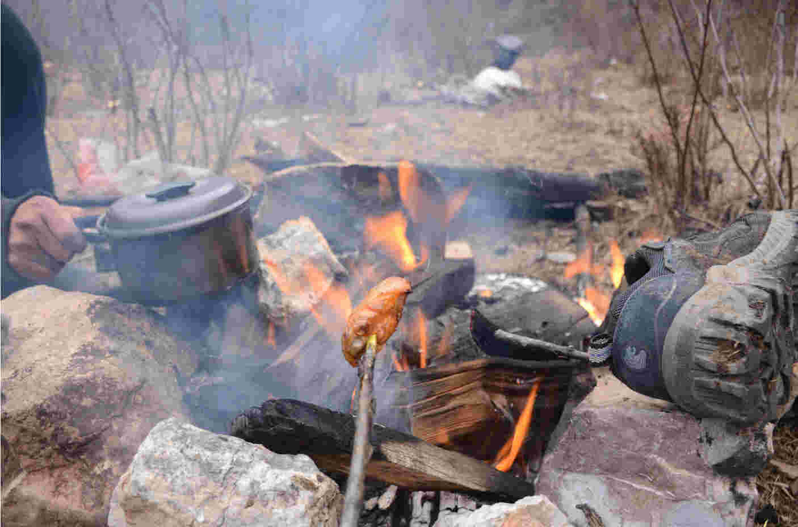
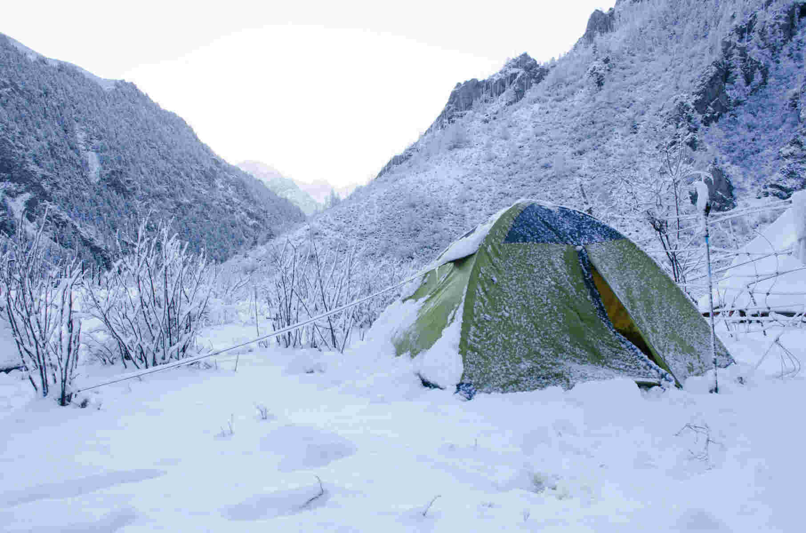
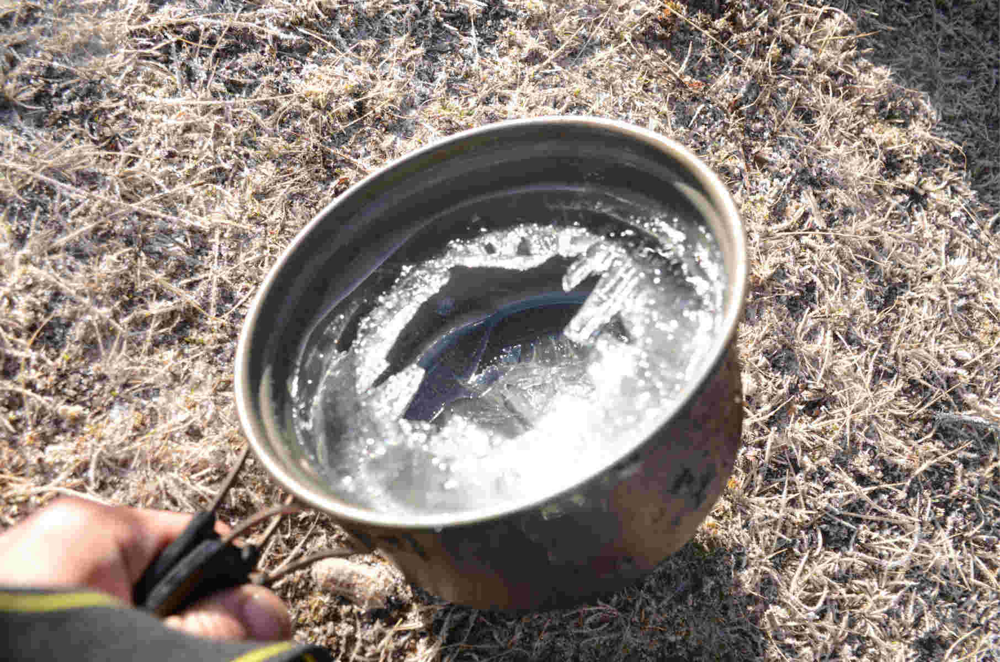
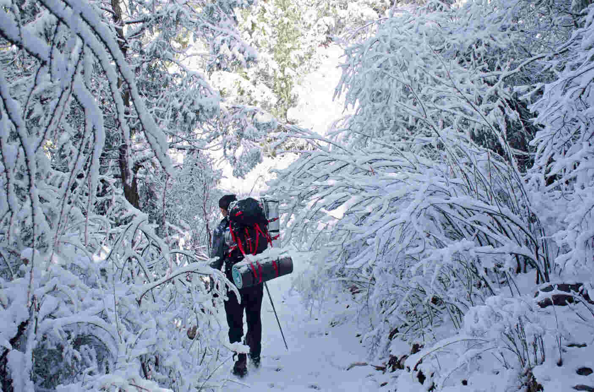
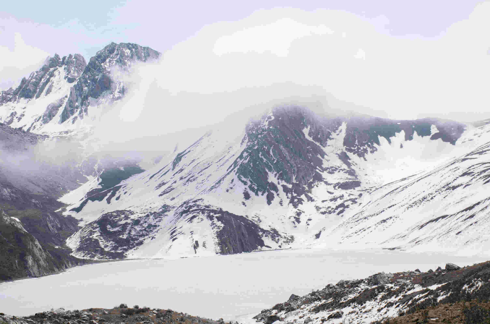
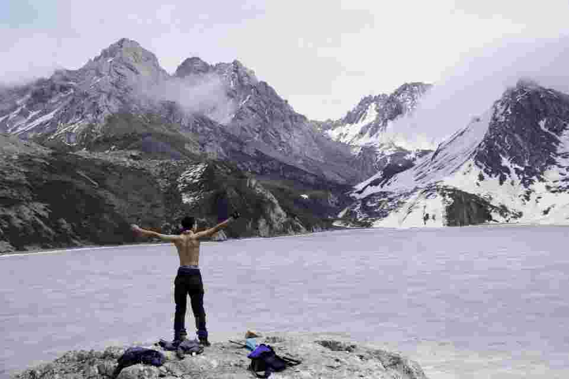
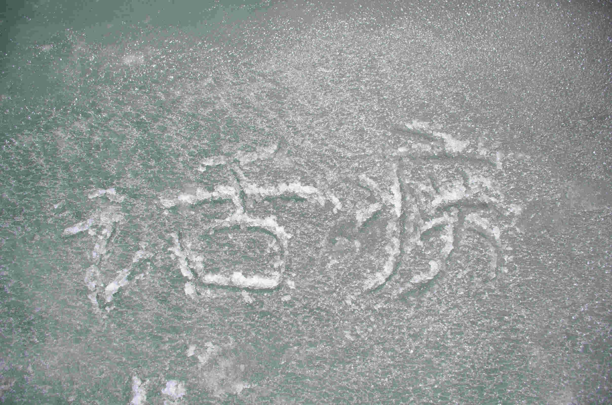

川北七藏沟徒步
2015年4月1日 清明 摄影：话痨
一直想去横断山脉看雪，到2015年终于有了机会。 于是协会中两人收整行装，把一切准备妥当后，坐上了从汉口开往成都的火车
清晨抵达成都站，没有停留，直接搭车前往松州。路上经过当年的地震废墟，虽然国殇已有七年，依然残垣断壁。而新城就在不远处。 在一座小村过夜，晚饭是面片汤，和旅馆的主人一起吃，五块钱。
第一天进山，天气清朗，云高水冷。四月的寒冷告诉我们，这是高原。
远处山上白雪粼粼
夜宿帐篷，烤鸡翅。遇到采冬虫夏草的山人，相互攀谈甚欢。然而忘记把装备收进帐篷
第二天，世界白芒一片。
鞋和锅都冻住了。不妨前行
雪灌进裤管，荆棘划破衣服。
在翻上一个几百米高的陡坡后，七藏沟的海子就在不远处
脱下上衣，感受寒冷。
在冰面上刻下名字，将在春夏消融.
归程。